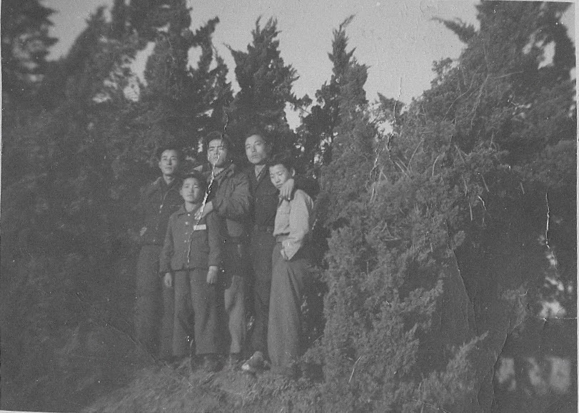

I learned a new phrase.
실향민1 - a displaced person.
They are people who are blocked from returning to their hometown freely after leaving their hometown. Refugees are also included.
I am a son of a displaced person.
오늘도 걷는다마는 정처 없는 이 발길 지나 온 자죽마다 눈물 고였다 선창 가 고동 소리 옛 님이 그리워도 나그네 흐를 길은 한이 없어라
타관 땅 발벗어 돈지 십 년 넘어 반평생 사나이 가슴속엔 한이 서린다 황혼이 찾어들면 고향도 그리워져 눈물로 꿈을 불러 찾어도 보네
낯익은 거리다마는 이국보다 차워라 가야 할 지평선엔 태양도 없어 새벽 별 찬 서리가 뼈 골에 스미는데 어데로 흘러가랴 흘러갈 소냐
This was my father’s favorite song. He would sing out loud and I would sing along as well. I learned the melody even as a young person
Now that I am older, I read the lyric and understand some of the sowrrow of being a displaced person. A stranger in a new part of Korea and a foreigner in a new continent.
Today I continue to walk (wander) Walk aimlessly Tears welled up at every passing person.
There is no rest for the wanderer

I am grateful that my parents were able to meet and establish a home in a new land. That we are able to follow in their footsteps.
My father during 1960s would travel to Hong Kong, Taiwan, and Kyushu, Japan on his way to and from Vietnam. Many years later, I was able to visit these same region and my children also spent time at those locations.
Footnotes
실향민(失鄕民)은 고향을 떠난 후 고향에 자유로이 돌아갈 길이 막힌 사람들이다. 난민도 포함된다.↩︎